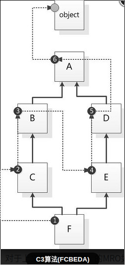

面向对象编程:Object Oriented Programming，简称OOP
把一组数据结构和处理它们的方法组成对象(object),把相同行为的对象归纳为类(class),
通过类的封装(encapsulation)隐藏内部细节
通过继承(inheritance)实现类的特化(specialization)/泛化(generalization)
通过多态(polymorphism)实现基于对象类型的动态分派(dynamic dispatch)
多态:不同对象的相同方法的不同行为
在JAVA在继承-重写才能体现多态,在python中,不知道对象到底是什么类型,但是又要对对象做点什么的时候,都会用到多态.很多的函数和运算符都是多态.唯一能毁掉多态的就是显式的检查类型
1 2 3 4 5
| 1+2 'fe'+'mn' 'abc'.count('a') [1,2,'a'].count('a')
|
继承
1 2 3 4 5 6 7 8 9 10 11 12 13 14 15 16 17 18 19 20 21 22 23 24 25 26 27 28 29 30 31 32
| class A(object): def __init__(self): print( "A.__init__" ) class B(A): def __init__(self): super().__init__() print("B.__init__" ) class C(B): def __init__(self): super().__init__() print("C.__init__" ) class D(A): def __init__(self): super().__init__() print("D.__init__" ) class E(D): def __init__(self): super().__init__() print("E.__init__" ) class F(C,E): def __init__(self): super().__init__() print("F.__init__" ) if __name__ == '__main__': f = F()
|
对于你定义的每一个类,Python会计算出一个所谓的方法解析顺序(MRO)列表. 这个MRO列表就是一个简单的所有基类的线性顺序表.例如
1 2 3 4 5
| >>> F.__mro__ (class'__main__.F'>,<class'__main__.C'>,<class'__main__.B'>, <class'__main__.E'>,<class'__main__.D'>,<class'__main__.A'>, <class'object'>)
|
为了实现继承,Python会在MRO列表上从左到右开始查找基类,直到找到第一个匹配这个属性的类为止
而这个MRO列表的构造是通过一个C3线性化算法来实现的,它实际上就是合并所有父类的MRO列表并遵循如下三条准则:
- 子类会先于父类被检查
- 多个父类会根据它们在列表中的顺序被检查
- 如果对下一个类存在两个合法的选择,选择第一个父类
C3算法特点
本地优先级:指声明时父类的顺序,比如F(C,E),如果访问F类对象属性时,应该根据声明顺序,优先查找C类,然后再查找E类.
单调性:如果在F的解析顺序中,C排在E的前面,那么在F的所有子类里,也必须满足这个顺序

类(Class):
用来描述具有相同的属性和方法的对象的集合.它定义了该集合中每个对象所共有的属性和方法.
类创建后,类命名空间中所有的命名都是有效属性名
对象:类的实例化
通过类定义的数据结构实例.对象包括两个数据成员(类变量和实例变量)和方法.
对象基本上可以看作数据(特征)以及由一系列可以存取,操作这些数据的方法所组成的集合.
使用对象替代全局变量和函数的原因可以有很多.多态(鸭子类型),封装,继承
封装和继承是被用作现实世界中对象的模型
1 2 3 4 5 6 7 8 9 10 11 12
| class Person(dict): def __init__(self,name): super(Person,self).__init__() self.name = name def get_name(self): return self.name if __name__ == '__main__': p = Person('femn') print(p) print(p.get_name())
|
属性:域,字段,成员变量,全局变量,数据成员(数据),私有成员,成员对象
属性:这个词来称呼任何点后面跟的名称 — 比如,在表达式z.real中,real就是对象z的属性.
更直接的说,对模块中名称的引用就是属性引用:在表达式 modname.funcname 中,
modname是模块对象而funcname是它的一个属性.
在这种情况下模块的属性和它里面所定义的全局名称之间就刚好有一个直接的映射关系:他们共享同一个命名空间
类变量:在整个实例化的对象中是公用的.定义在类中且在函数体之外,通常不作为实例变量使用.
实例变量:定义在方法中的变量,只作用于当前实例的类
property方法实例
1 2 3 4 5 6 7 8 9 10 11 12 13 14 15 16 17 18
| class Rectangle: def __init__(self): self.width = 0 self.height = 0 def setSize(self, size): self.width, self.height = size def getSize(self): return self.width, self.height size = property(getSize, setSize) r = Rectangle() r.width = 10 r.height = 5 r.size r.size = 150, 100 r.width
|
@property 装饰器实例
1 2 3 4 5 6 7 8 9 10 11 12 13 14 15 16 17 18 19 20 21 22 23 24 25 26 27 28 29 30 31 32 33 34 35 36 37 38 39 40 41 42 43 44 45 46 47 48 49 50 51 52 53 54
| class Person(object): def __init__(self,name,age): """Constructor""" self.name = '' self.age = 0 def getName(self): print('property()') return self._name def setName(self,name): self._name = name name = property(getName,setName) __aim = 'become stronger' @property def info(self): """ Return my info """ return "my name is %s, age is %s" % (self.name, self.age) @property def age(self): print('@property装饰器') return self._age @age.setter def age(self,age): self._age = age @age.deleter def age(self): raise AttributeError("Can't delete attribute") if __name__ == '__main__': p = Person('leipengkai',25) p.set_name = 'femn1' p.name = 'femn1.1' print(p.name) p.age = 18 print(p.age)
|
方法(绑定方法,动作)
绑定方法:将它们的第一参数绑定到所属的实例上,因此您无须显示提供该参数.当然也可以将特征绑定到一个普通的函数上,这样就不会有特殊的self参数了
函数:self参数是对象自身的引用.它正是方法和函数的区别.
在java中,方法和函数是一样的.在python中,方法(self)必须在类中,而函数可以在任意位置定义
静态方法:(无法访问类属性、实例属性,没有self参数.相当于一个相对独立的方法,
跟类其实没什么关系,换个角度来讲,其实就是放在一个类的作用域里的函数而已.
被装入staticmethod类型的对象中.
类成员方法:(可以访问类属性,无法访问实例属性.
需要名为cls的类似于self的参数,可以用类的具体对象调用.cls自动被绑定到类中
被装入classmethod类型的对象中
1 2 3 4 5
| class A(): a =1 def __init__(self,b,c) self.b=b self.c=c
|
参数
1 2 3 4 5 6 7 8 9 10 11 12
| def print_params(x, y, z=3, *pospar, **keypar): print(x,y,z) print(pospar) print(keypar) print_params(1,2,3,5,6,7,foo=1, bar=2) 1 2 3 (5, 6, 7) {'foo': 1, 'bar': 2} print_params(1,2,foo=1, bar=2) 1 2 3 () {'foo': 1, 'bar': 2}
|
Python 的作用域和命名空间
命名空间(namespace)是从名称(标识符)到对象的映射,可以将其理解为字典,各个命名空间是独立的,没有任何关系的,所以一个命名空间中不能有重名,但不同的命名空间是可以重名而没有任何影响
四个namespace:一个函数的所有local,一个类对象的所有属性(数据成员,成员函数),一个模块的global(这个模块定义的函数,类,变量)和built-in(包括内置函数,内置常量,内置类型)
命名空间都是有创建时间和生存期的.
对于Python built-in names组成的命名空间,它在Python解释器启动的时候被创建,
在解释器退出的时候才被删除.内置名称实际上也存在于一个模块中; 这个模块叫 builtins.
对于一个Python模块的global namespace,它在这个module被import的时候创建,
在解释器退出的时候退出.被最高级别的解释器调用的语句,不论是从脚本还是从交互读取的,
都被认为是一个名叫main的模块的一部分,所以它们有自己的全局命名空间.
对于一个函数的local namespace,它在函数每次被调用的时候创建,
函数返回的时候被删除.当然,递归调用会有它们自己的局部命名空间
总结来说:一个模块的引入,类的定义,函数的调用都会引入命名空间
在执行过程中遇到了某个标识符(名称)时,Python首先尝试在local命名空间中查找它,如果没有找到,
再在global命名空间中查找,如果还是没有找到,接着在built-in命名空间中查找.
如果都不存在,则被认为是一个错误,会抛出一个“NameError”异常
变量的作用域(scope)是Python程序的文本区域,在该区域某个命名空间中的名字可以被直接引用.你所申明的变量可以在哪些地方使用.
一个Python程序的几个作用域:
- 最里面的局部作用域,基本类型的作用域:(从变量定义处开始,以到结束此方法时截止
- 外层函数的局部作用域:对象的作用域:(对象出了方法外后,只是引用消失了,但是对象本身还在堆中.资源回收站会定期回收垃圾对象
- 模块的全局作用域
- 包含Python内置对象的最外层作用域
赋值(assignment)操作不会拷贝,只是把标识符和对象做一个绑定,也就是说赋值操作就是名字和对象的绑定或重绑定,也可以说赋值是把原来对象的引用传递给另一个引用！
global声明的变量会引用到当前模块的全局命名空间的变量
nonlocal:用于声明非全局的外层变量.这个声明会从声明处从里到外的namespace去搜寻这个变量,直到模块的全局域(不包括全局域)
找到了则引用这个命名空间的这个名字和对象,若作赋值操作,则直接改变外层域中的这个名字的绑定.如果在外层域中没有找到,则会报错
这是一个例子用于说明如何引用不同的作用域和命名空间, global 和 nonlocal 如何影响变量绑定:
1 2 3 4 5 6 7 8 9 10 11 12 13 14 15 16 17 18 19 20 21 22 23 24
| def scope_test(): def do_local(): spam = "local spam" def do_nonlocal(): nonlocal spam spam = "nonlocal spam" def do_global(): global spam spam = "global spam" spam = "test spam" do_local() print("After local assignment:", spam) do_nonlocal() print("After nonlocal assignment:", spam) do_global() print("After global assignment:", spam) if __name__ == '__main__': scope_test() print("In global scope:", spam)
|
注意局部的赋值(默认)并没有改变scope_test绑定的spam.
而nonlocal则改变了scope_test中的spam,而global则改变了模块级别的绑定.
你可以看到在global赋值之前并没有绑定spam的值
1 2 3 4 5 6 7 8 9 10 11 12 13 14 15 16
| def test(): def do_nonlocal(): nonlocal spam print("asssignment:", spam) def do_nonlocal2(): nonlocal spam spam = "nonlocal2 spam" do_nonlocal2() spam = "test spam" do_nonlocal() print("after nonlocal2 asssignment:", spam) if __name__ == '__main__': test()
|
总结:Python会按照从内层到外层的顺序逐个寻找作用域中的变量(局部到全局),在函数内引用全局变量不需要global，函数内修改全局变量要加global,nonlocal也是一样